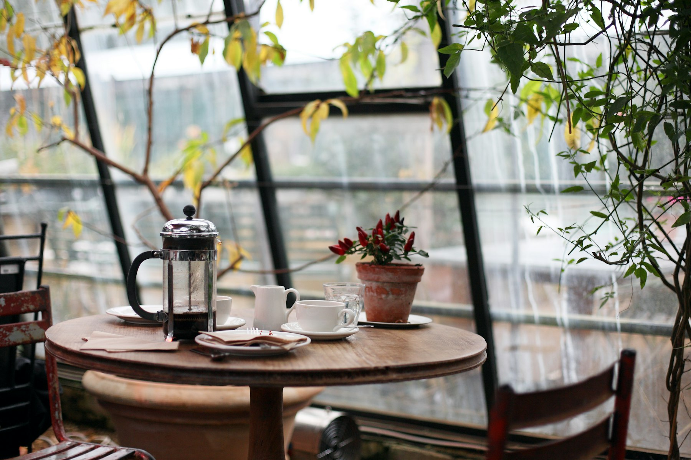
海を眺めて、ゆっくりと一杯。
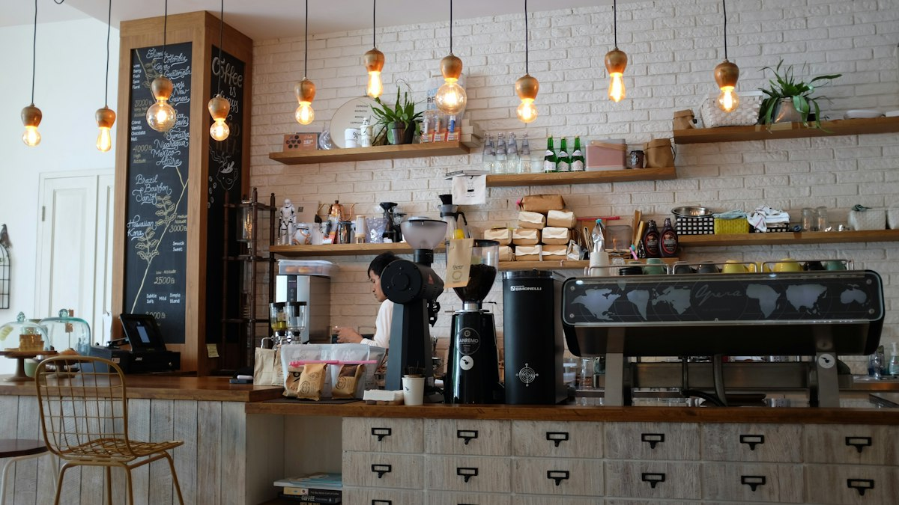
東京でバリスタとパン職人をしていたふたりが、糸島の海に惹かれて移り住み、2019年にお店をはじめました。
一杯ずつハンドドリップで淹れるコーヒーと、毎朝焼き上げるパン。糸島の野菜や果物を使ったランチとスイーツ。席数14の小さなお店で、海を眺めながら、ゆっくりした時間を過ごしてください。
店内で毎週焙煎しています。豆の量り売りもできます。
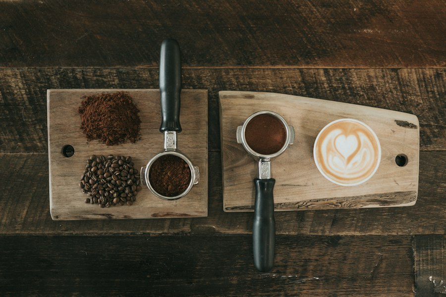
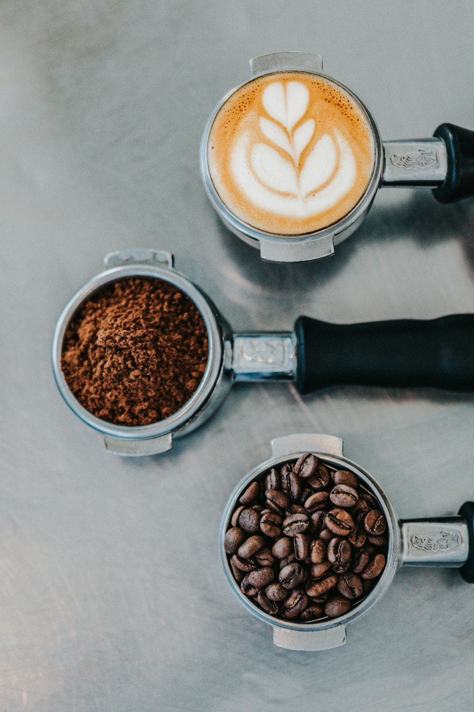
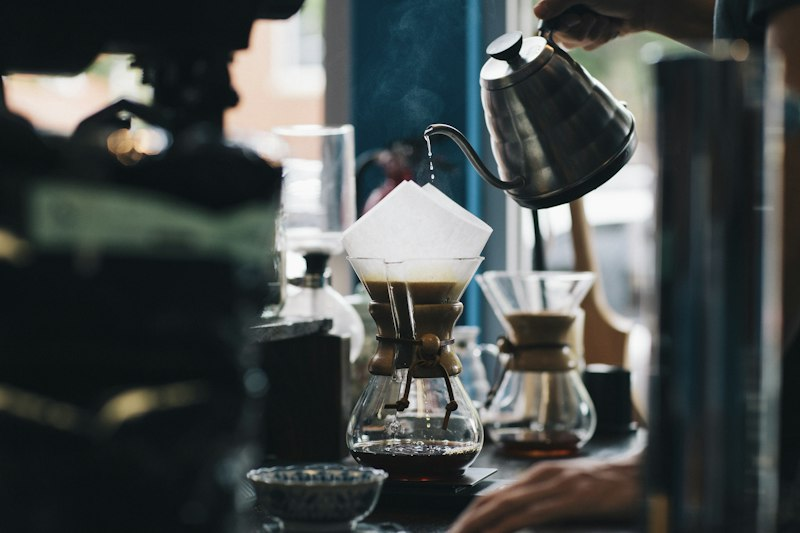
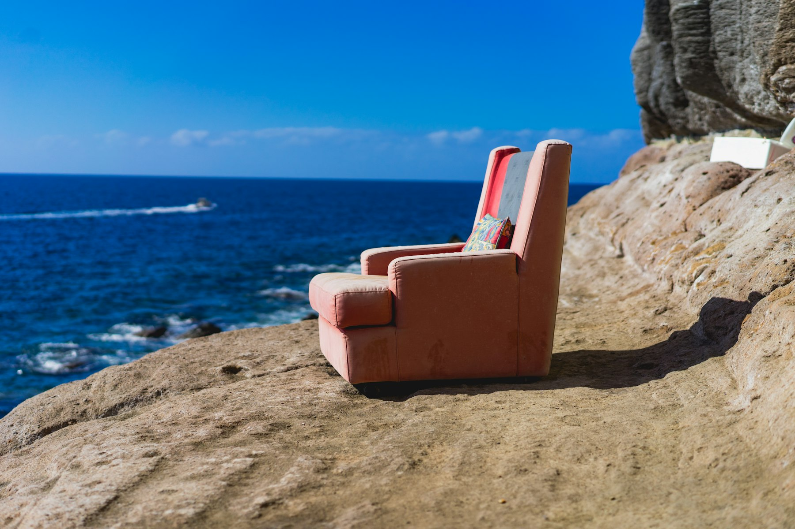
テラス席からは、玄界灘が一望できます。
パンは毎朝7時から、少しずつ焼き上げています。テイクアウトもどうぞ。
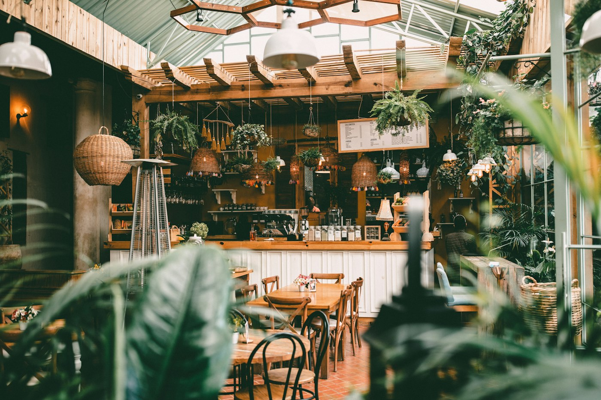
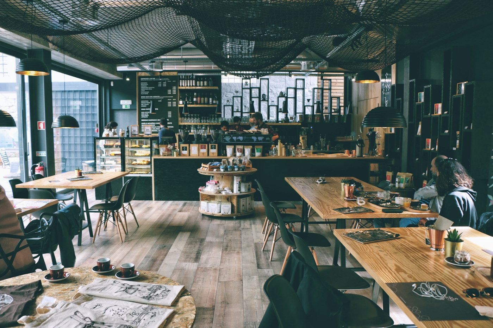
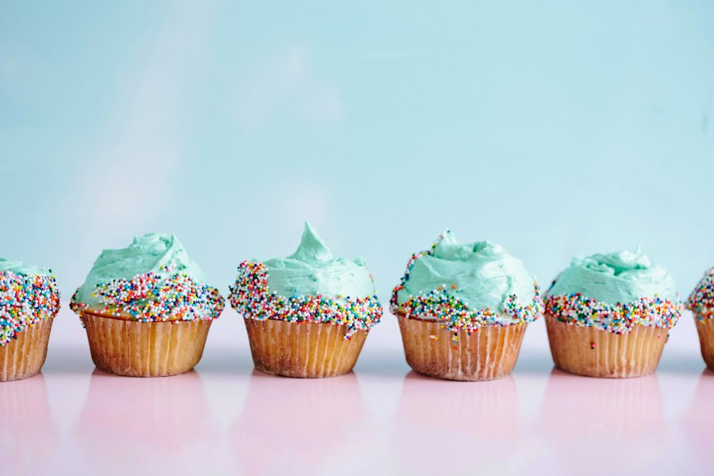
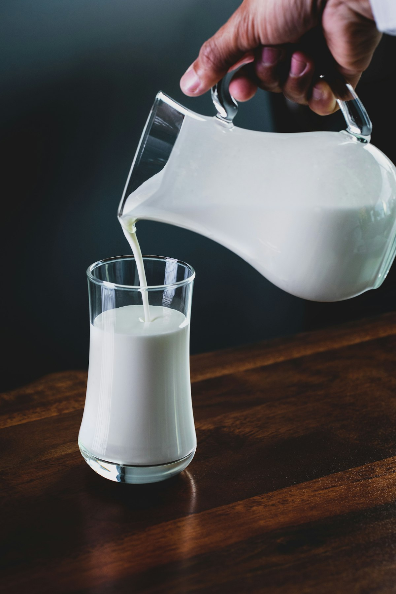
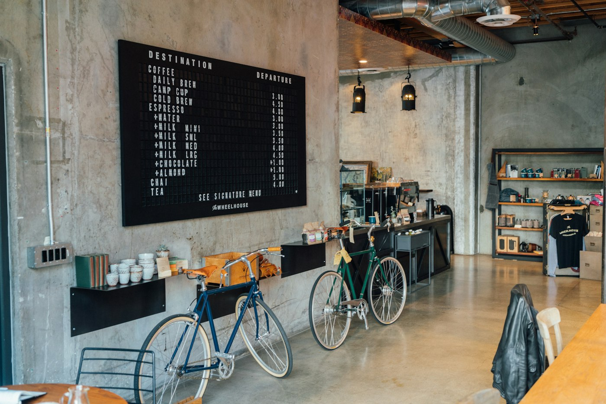